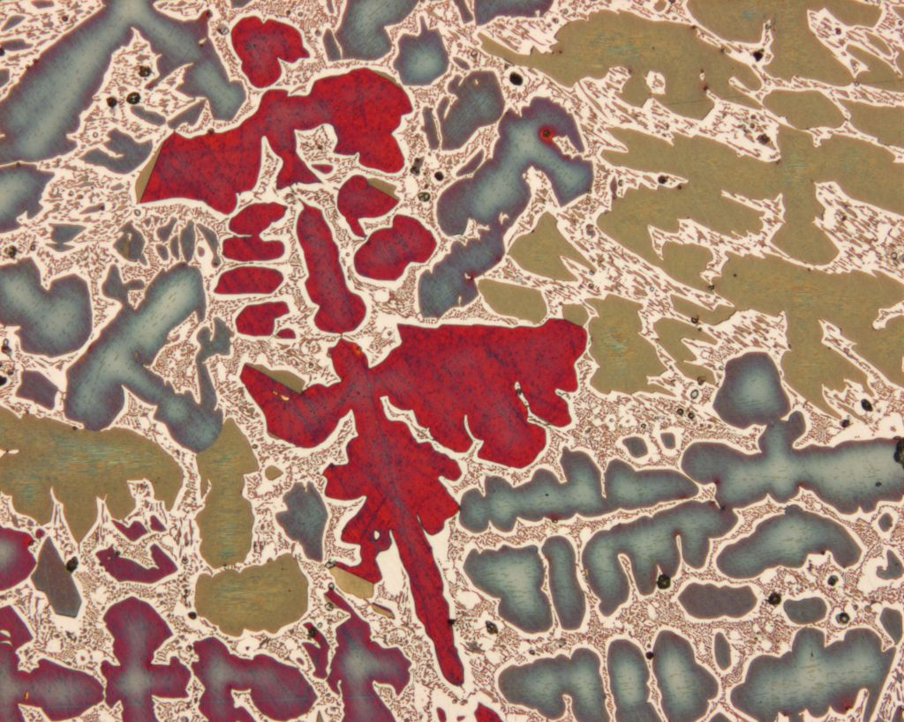
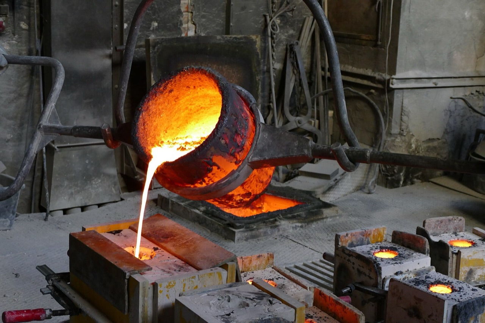
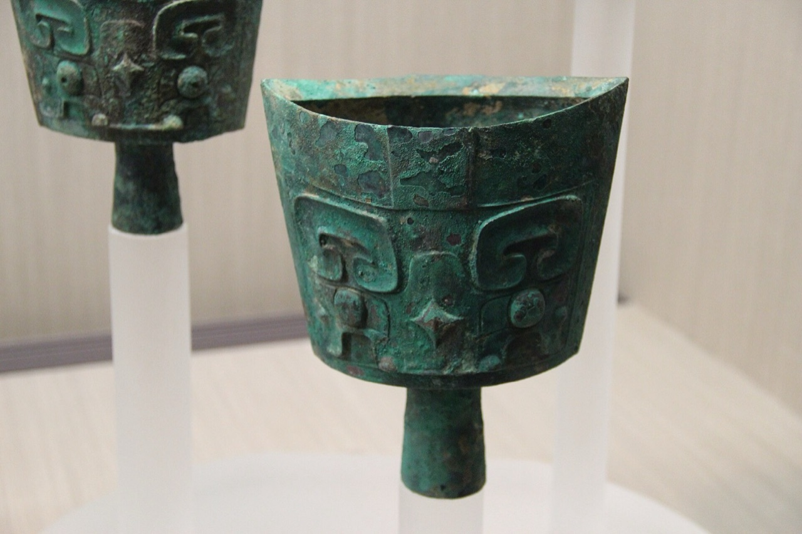

Два мягких металла дают более твёрдую смесь
В конце третьей главы осталась трудность. Медь можно было отлить в нужную форму, но отливка получалась мягкой. Газовые пустоты мешали сделать её плотной. Иногда медь выходила более твёрдой и бледной. В её руде был мышьяк, вещество, которое может входить в медь и менять её свойства. Медь с такой добавкой называется мышьяковой медью.
Мышьяковой медью пользовались в Иране, восточной Анатолии и Месопотамии в пятом–четвёртом тысячелетиях до н. э. Во второй половине четвёртого тысячелетия она стала широко распространённой. Сначала мышьяк, скорее всего, попадал в медь вместе с рудой. Позднее его иногда добавляли отдельно. На это указывает шлак без мышьяка из Норшунтепе в восточной Анатолии. Как часто мастера делали это намеренно, пока неясно.
Небольшая добавка мышьяка помогает меди твердеть, особенно под молотом. При достаточном количестве мышьяка появляется серебристый блеск. До или во время литья часть мышьяка уходит из жидкого металла в виде пара его оксида, соединения с кислородом. Давно известно, что такие испарения при добыче и переработке руды повреждают нервную систему, глаза, лёгкие и кожу. У мастеров не было мышьяка в виде отдельного металла, чтобы отмерить его перед добавлением. Раз за разом получать одинаковую смесь было трудно.
У оловянной бронзы было своё очень раннее начало. Тонкий кусочек из Плочника в Сербии изготовлен не позднее примерно 4650 года до н. э. В нём около 11,7 части олова на сто частей металла. В этой главе доли и проценты олова даны по массе: десять частей олова на сто частей всего металла по массе. Металл из Плочника получили из руды, которая содержала и медь, и олово. Возможно, людей привлекал его цвет, похожий на золото. Затем такая бронза исчезает из находок примерно на 1500 лет.
Регулярное изготовление оловянной бронзы начинается в Месопотамии, Анатолии и западном Иране в конце четвёртого–начале третьего тысячелетия до н. э. В Месопотамии широкое распространение начинается примерно в середине третьего тысячелетия, а в Иране позже. Этот металл твёрже меди, часто имеет золотистый цвет и лучше поддаётся литью. Само олово плавится уже при 232 °C. Полезный новый металл получается из двух мягких.
Бронзовый век, период культуры, которая производила бронзу или получала её через торговлю, в разных местах начался по-разному. Для Ближнего Востока его общие границы примерно 3300–1200 годы до н. э. В Центральной Европе он начинается около 2300 года до н. э.
В Эрлитоу известно самое раннее крупномасштабное производство металла на Центральной равнине Китая. Единой принятой границы бронзового века для Китая нет. Столицей государства Шан был Аньян, примерно в 1250–1046 годах до н. э.
Оловянную бронзу и мышьяковую медь долго использовали одновременно. В Анатолии олово вытеснило мышьяк к концу среднего бронзового века. Олово можно было отмерять, а отливки с ним могли быть прочными и без ковки. Вероятно, это и помогло переходу. Сыграли ли свою роль отравления, остаётся спорным.
Неравномерность перехода легко представить по орудиям одного человека. Эци, чьё тело сохранилось во льду Альп, жил между 3359 и 3105 годами до н. э. Его топор отлили из почти чистой меди и не упрочняли ковкой. У его ножа было каменное лезвие. Среди перечисленных его вещей единственным металлическим предметом был медный топор.
Доставить олово к меди
Тёмный камень и долгая дорога
Главная руда олова называется касситеритом. Это тёмный тяжёлый камень. Он может скапливаться в руслах ручьёв. Возможно, люди впервые заметили его, когда промывали гравий в поисках золота. Это предположение, а не известная история открытия.

Тёмные кристаллы касситерита со светлым камнем между ними. Образец из геологической коллекции Университета Северной Дакоты. Место его происхождения неизвестно.
Фото: Shannon Heinle (GeoDIL), CC0, Wikimedia Commons
.jpg){kind=link}
Олово редко встречается. В наружной каменной оболочке Земли его около 2 частей на миллион, а меди около 70. Большинство месторождений олова находилось далеко от городов, которым нужна была бронза.
В Европе олово есть в Корнуолле и Девоне, Бретани, на Пиренейском полуострове и в Рудных горах. В Кестеле в Анатолии олово добывали в третьем тысячелетии до н. э., хотя точные даты спорны. Древние оловянные рудники были и в Центральной Азии. Откуда поступало самое раннее олово Ближнего Востока, до сих пор неизвестно.
Около 1900 года до н. э. торговцы возили олово на ослах из Ашшура в Канеш в Анатолии. Более 23000 глиняных табличек сохранили сведения об этой торговле. Оценки её объёма сильно различаются; одна из них даёт около 110 тонн олова за тридцать лет. В записях одного купца, Шалим-ахума, описан 41 ослиный вьюк с 1 тонной олова и 425 тканями.
Корабль, затонувший у Улубуруна возле нынешнего турецкого берега, около 1320 года до н. э. вёз примерно 1 тонну олова, столько же, сколько тот караван, а также около 10 тонн меди. Металл перевозили в виде слитков, отлитых кусков для хранения и перевозки. Этого хватало примерно на 11 тонн бронзы, близкой к обычной смеси из 9 частей меди и 1 части олова.

Медный слиток с затонувшего у Улубуруна корабля, теперь в Музее подводной археологии Бодрума. Четыре выступа напоминают углы растянутой шкуры. На поверхности виден процарапанный знак.
Фото: Zunkir, CC BY-SA 4.0, Wikimedia Commons

О происхождении олова с этого корабля спорят. Среди возможных источников называют Анатолию, Центральную Азию и Британию. Общепринятого маршрута пока нет.
Четыре пути к одной смеси
Можно начать с руды, которая содержит оба металла. Можно вместе выплавить медную руду и касситерит. Третий путь: добавить касситерит в жидкую медь под слоем угля, который помогает освободить олово из руды. Четвёртый начинается с двух металлов: медь и олово плавят вместе.
Кусочек из Плочника показывает первый путь. Находки из западного Ирана истолкованы как следы совместной выплавки разных руд. Добавление оловянной руды к меди тоже считают одним из возможных способов получения ранней бронзы. К среднему и позднему бронзовому веку медь и олово в виде металлов смешивали уже в больших масштабах. Отдельные металлы позволяют мастеру задавать количество олова.
Как расплавить два металла
Нужны огонь на древесном угле, мехи и тигель. Можно сначала расплавить медь, а незадолго до заливки добавить олово. Можно плавить оба металла сразу. Слой угля над жидкостью не даёт воздуху добраться до неё.
В большинстве исследованных британских мечей бронзового века содержится от 7 до 14 частей олова. На одном поселении позднего бронзового века в Австрии топоры и долота содержат от 7,5 до 10 частей, а ножи от 9 до 15. Единого точного рецепта для всех мастеров не было. Бронза примерно с 10 частями олова уже жидкая при температуре около 1000 °C, а меди нужны 1085 °C. Олово также забирает из жидкости кислород и помогает ей затекать в форму.
На картинке ниже показана медь, в которой всё больше олова. Посмотри, как меняется цвет, где затвердевание начинается и заканчивается и для чего брали разные смеси.
Олово мешает складкам двигаться
Несколько чужих атомов в рядах
В бронзе с небольшим количеством олова его атомы занимают места некоторых атомов меди. Они входят в те же кристаллические ряды. Это твёрдый раствор: атомы второго вида рассеяны среди атомов первого. Представь сахар, распределённый в чае, только теперь смесь твёрдая, а её атомы стоят рядами.
Десять частей олова по массе не означают один атом олова на десять атомов. Атом олова тяжелее атома меди. При 10 частях олова по массе ему принадлежит примерно 1 атом из 18; при 5 частях, примерно 1 из 36. Атом олова немного крупнее атома меди. Один из распространённых способов измерения даёт размеры 145 и 135 в одной шкале, то есть разницу примерно в семь сотых. Точность этого измерения составляет лишь около 5 единиц, поэтому разница в 10 приблизительна. Другие способы измерения дают другие размеры.
Более крупный атом сжимает ряды вокруг себя, прижимая их теснее друг к другу. Разные атомы могут уживаться в рядах лишь до определённого предела: если размеры различаются больше чем примерно на 15 частей из ста, большому числу чужих атомов обычно трудно разместиться в общих рядах.
Вспомни складки из первой главы. С одной стороны складки ряды сжаты, с другой растянуты. С растянутой стороны больше места, поэтому крупный атом помещается там с меньшим сжатием. Атому и складке удобно рядом. Складка, которая попадает в такое место, стремится там остаться. Чтобы сдвинуть её дальше, нужно больше силы, чем для движения по чистой меди.
Атом олова притягивает складку в удобное положение. Он не стоит стеной на её пути. Более мелкие атомы тоже могут удерживать складки, только со сжатой стороны. Чужой атом отличается от меди и жёсткостью, то есть тем, насколько сильно материал сопротивляется изменению формы. Это усиливает действие добавки. Чем больше добавленных атомов, тем сильнее упрочнение, пока ряды ещё могут их вместить.
Ниже попробуй слабо ударить по чистой меди, затем по меди с атомами олова. Посмотри, какие складки прошли, а какие задержались; потом ударь сильнее.
Твёрже ещё до первого удара
Бронза уже обладает дополнительной твёрдостью до всякой ковки. Олово в рядах уже мешает складкам двигаться. Затем ковка добавляет наклёп: новых складок становится больше, и они мешают друг другу, как в первой главе.
Шкала Бринелля служит для измерения твёрдости: чем больше число, тем твёрже металл. После отжига бронза с 1 частью олова даёт 50, а с 8 частями 82. Если уменьшить толщину каждой вдвое холодной обработкой, получатся 110 и 195. Олово повышает и начальную твёрдость, и твёрдость после обработки.
Шкала Виккерса тоже измеряет твёрдость. Её числа примерно похожи на числа Бринелля, но не совпадают с ними точно. В этой шкале литая медь даёт 40–50, а обработанная вхолодную 100–120. Сильно обработанная бронза с 12 частями олова достигает 220. Само олово даёт всего 6–10. Сравнивать результаты, полученные по двум разным шкалам, трудно.
Мышьяк тоже помогает меди твердеть при ковке. Но после примерно 3 частей мышьяка дальнейшая добавка мало влияет на такое упрочнение. Олово в измеренном диапазоне продолжает повышать твёрдость.
Когда ряды не вмещают всё олово
Ряды меди могут вместить лишь ограниченное количество олова. Теоретический предел около 17 частей, но на практике он ближе к 14. В отливках редко удаётся равномерно разместить даже столько. Лишнее олово может соединиться с медью в другой кристалл. Это дельта-фаза, твёрдое хрупкое соединение, в котором около трети массы приходится на олово.
Если такого соединения много, бронза ломается под молотом. При содержании олова от 17 до 19 частей её нельзя ковать ни горячей, ни холодной. Выше 19 частей горячая обработка снова возможна. В древних колоколах и зеркалах часто было 20–25 частей олова, от 2 до 10 частей свинца, а остальное составляла медь. Такие вещи почти всегда отливали.
Отливка твердеет не сразу
Чистая медь твердеет при 1085 °C. Бронза твердеет в некотором промежутке температур. При содержании олова около 10 частей первые кристаллы появляются примерно при 1000 °C. В современных сплавах такого состава последняя жидкость исчезает около 831–843 °C, примерно на сто шестьдесят градусов ниже начала.
В первых кристаллах меньше олова, чем в окружающей жидкости. Их ветви растут, и каждый новый слой содержит больше олова. В оставшейся между ветвями жидкости его ещё больше. Такая неравномерность называется дендритной ликвацией: середина кристалла богата медью, а наружная часть богаче оловом. Охлаждение идёт слишком быстро, чтобы олово успело равномерно распределиться в твёрдом металле.
Последняя жидкость заполняет промежутки между ветвями. При дальнейшем охлаждении эта богатая оловом прослойка превращается в смесь, содержащую твёрдое хрупкое соединение. Оно часто остаётся даже в бронзе всего с 10 частями олова. Правильный отжиг бронзы с содержанием олова до примерно 14 частей позволяет ему распределиться по зёрнам и убирает хрупкую прослойку.
Проследи за остыванием отливки в модели ниже. Сравни её падающую температуру с горизонтальным участком у меди, затем включи отжиг и посмотри, как распределяется олово.

Разрезанный и отполированный кусок колокольной бронзы под микроскопом. Крупные кристаллы ветвятся, как деревья. Химическая обработка делает строение видимым и придаёт эти цвета; это не собственный цвет металла. Указанное увеличение 200:1.
Фото: Eisenbeisser, CC BY-SA 3.0, Wikimedia Commons

У полированной бронзы своя смена цветов. Медь красная. Около 5 частей олова делают её бледно-розовой; примерно от 8 до 20 частей преобладает жёлтый. С дальнейшим добавлением олова металл бледнеет и около 30 частей выглядит серебристым. Вместе с составом меняются цвет, твёрдость и способность поддаваться обработке.
Как хорошо изготовить и обработать бронзу
Для хорошего клинка мало твёрдого сплава. Металл должен заполнить форму, выдержать ковку и сохранить твёрдую режущую кромку.
Шесть рецептов бронзы
Самые ранние известные письменные китайские рецепты бронзы приведены в китайском тексте о ремёслах под названием Каогун цзи. Эти рецепты записали около 300 года до н. э., через несколько веков после Шан. Цзинь и си называют два вещества, которые смешивают для литья. Для разных изделий предусмотрены шесть рецептов:
- Колокола и котлы: разделить цзинь на шесть частей; одну занимает си.
- Топоры для рубки и обработки дерева: разделить цзинь на пять частей; одну занимает си.
- Лезвия на длинных древках: разделить цзинь на четыре части; одну занимает си.
- Большие клинки: разделить цзинь на три части; одну занимает си.
- Ножи и наконечники стрел: разделить цзинь на пять частей; две занимает си.
- Зеркала: цзинь и си, половина.
Долгое время эти названия понимали как чистую медь и чистое олово. Теперь такое прочтение оспаривают: оба вещества могли быть заранее приготовленными сплавами. Анализы позволяют предположить, что литейщики эпохи Шан в Аньяне смешивали три довольно чистых металла: медь, олово и свинец, очень мягкий металл. В этих шести рецептах используются два вещества, возможно, заранее приготовленные сплавы. Когда способ изменился, остаётся открытым вопросом.
Выбрать и сохранить состав
- Подбери смесь под задачу. Большинство исследованных британских мечей бронзового века содержит от 7 до 14 частей олова; ножи с одного поселения позднего бронзового века в Австрии содержат от 9 до 15. Добавление олова повышает твёрдость, но его избыток создаёт хрупкий материал, который может треснуть. Смесь для литого колокола может не годиться для клинка, который куют вхолодную.
- Взвесь отдельные металлы. Металлическое олово позволяет задать состав, а не зависеть от случайных примесей в руде. Вероятно, такая управляемость была преимуществом перед мышьяковой медью.
- Не добавляй свинец в клинок. Свинец очень мягкий. Он не растворяется в рядах меди и обычно собирается между зёрнами, ослабляя клинок. Зато он может помогать жидкому металлу заполнять форму, поэтому бывает полезен в других отливках.
- Держи жидкость под углём. Слой угля не пускает воздух. В отдельном опыте восемь переплавок в угольном горне не дали измеримой потери олова, даже когда тигель стоял поверх угля и мехи дули прямо на него. Сам горящий уголь оставлял вокруг тигля слишком мало свободного кислорода. В электрической печи с доступом воздуха олово терялось, соединяясь с кислородом. Повторное использование бронзы не обязательно ведёт к потере олова.
Помочь металлу заполнить форму
Другое правило для литейщика: следить за цветом испарений. Тёмные сменяются жёлто-белыми, затем сине-белыми, затем синими или зелёными. Слово в двух последних названиях цветов может означать и синий, и зелёный. После этого металл можно лить.
- Нагрей достаточно, но не чрезмерно. В опытах смесь с 10 частями олова заливали примерно при 1100 °C. При недостаточном нагреве металл застывает раньше, чем заполнит форму. Лишний нагрев может оставить газовые пустоты.
- Выбери форму, которая выдержит жар. Формы делали из камня, глины и бронзы. Подходит мелкозернистый камень, устойчивый к резкому нагреву. Две половины должны плотно сходиться. В одном опыте большая часть бронзы вытекла через маленькую щель между ними.
- Высуши и прогрей форму. Влага может дать газовые пустоты. Прогрев помогает металлу не застыть в узких участках, но экспериментаторы не согласны, что он полезен всегда: одна группа позднее получила лучшие отливки в непрогретых формах. Сажа на каменной форме помогала вынуть отливку. На бронзовой форме покрытие из молотого древесного угля, животного жира и золы не давало залитому металлу привариться к форме.
- Закрепи то, что оставит полость. Стержень помещают внутрь формы, чтобы металл не заполнил часть пространства. Глиняный стержень позволяет получить втулку, полость для деревянной рукояти. Он должен оставаться на месте, пока вокруг течёт металл. Он также должен пропускать газ, иначе вокруг могут возникнуть пустоты.

Две бронзовые формы для топоров с петлями, найденные в Норфолке в Англии и датированные 1400–1100 годами до н. э. Каждая состоит из двух половин. На снимках видны полости в форме топора, наружные стороны и соединённые половины.
Фото: Suffolk County Council / Faye Minter, CC BY-SA 4.0, Wikimedia Commons
.jpg){kind=link}
Одних правильных очертаний мало. В одном опыте все двенадцать глиняных форм для втульчатых топоров дали отливки с множеством газовых пустот. Металл напоминал дырчатый сыр. Экспериментатор предположил, что причин было несколько: слишком мало выходов для газа, слишком толстые и недостаточно пористые глиняные стенки, а также недостаток опыта.

Бронзу заливают в подготовленные формы в современной мастерской художественного литья в Мюнхене. Яркая струя входит в отверстие над формой. Позади светится печь.
Фото: Kritzolina, CC BY-SA 4.0, Wikimedia Commons

Оставить кромку твёрдой
- Куй, отжигай, затем куй снова. Холодная ковка упрочняет режущую кромку. Отжиг позволяет продолжить изменение формы. Там, где нужна твёрдость, закончи холодной ковкой. В итоге кромка становится твёрже остального клинка.
- Дай отжигу достаточно жара и времени. Медные сплавы обычно отжигают при 500–800 °C. Ниже примерно 520 °C хрупкая прослойка может сохраниться. Короткий нагрев до более высокой температуры тоже может убрать её не полностью. По структуре ранних оловянных бронз Балкан исследователи заключили, что их создатели отжигали бронзу при большем нагреве, чем медь. Они знали: новый металл требует другого обращения.
- Остановись до появления трещин. Чрезмерная ковка растрескивает металл. При отжиге могут вырасти новые зёрна, но трещины от этого не закроются. По-видимому, древние мастера прекращали ковку, когда кромка становилась достаточно твёрдой, а не стремились к предельной твёрдости.
- Убери швы отливки и отделай поверхность. Выступы на стыке половин формы и остатки металла у входа в форму удаляли ковкой и полировкой. Кромку затачивали.
В одном исследовании орудий позднего бронзового века из восточной Австрии, датированных примерно 1080–800 годами до н. э., твёрдость кромок топоров, долот и кирки составила 215–300 по Виккерсу. У ножа, обработку которого закончили отжигом, она составила 145 или меньше. Поясные зажимы, которым требовалась гибкость, оставляли отожжёнными. У современного листа бронзы с 12 частями олова значения были 139 после литья, 137 после отжига и 164 после холодной обработки. Одного состава недостаточно, чтобы узнать конечную твёрдость.
В модели ниже прокуй кромку топора и посмотри, где растёт твёрдость. Попробуй отжиг между подходами к ковке, затем выбери, чем закончить работу.
Жар и испарения по-прежнему опасны
До или во время литья мышьяк уходит из жидкого металла в виде пара его оксида. Известно, что такие испарения при добыче и переработке руды повреждают нервную систему, глаза, лёгкие и кожу. Вода при встрече с жидким металлом может резко превратиться в пар и разбросать горячий жидкий металл. Угольный огонь по-прежнему опасен угарным газом, знакомым из третьей главы. Более хороший металл не избавляет от опасностей огня.
Клинок лучше, путь к сырью длиннее
Бронза даёт более текучий расплав, позволяя отливать сложные предметы в закрытых формах. Она дала мастерам возможность начать массовое производство. Каменные формы из двух половин известны со среднего и позднего бронзового века. У топоров появились отверстия и втулки для рукоятей. К кинжалам добавились длинные мечи.
Первые клинки, которые можно уверенно назвать мечами, происходят с минойского Крита примерно 1700 года до н. э. Некоторые были длиннее 100 см. Более ранние похожие на мечи клинки из Арслантепе сделаны из мышьяковой меди, а не оловянной бронзы.

Два меча бронзового века из Дании. Один прямой, другой сильно изогнут. Изогнутый меч отлили целиком; находку описывают как подношение или захоронение раннего бронзового века.
Фото: John Lee, Nationalmuseet (Denmark), CC BY-SA 2.5, Wikimedia Commons

Литьё позволило делать и гораздо более крупные вещи. Хоумуву дин, церемониальный сосуд из Аньяна, весит 832,84 кг. Его описывают как самое тяжёлое сохранившееся древнее бронзовое изделие.

Бронзовые колокола поздней эпохи Шан, тринадцатого–одиннадцатого веков до н. э. Они стоят открытой стороной вверх. Бока украшены выпуклыми лицами. Колокола выставлены в Дворцовом музее в Тайбэе.
Фото: Gary Todd, CC0, Wikimedia Commons

Небесный диск из Небры меньше: около 30 см в поперечнике при массе 2,2 кг. Он сделан из оловянной бронзы, медь для которой поступила из Миттерберга в Австрии. Его захоронение датируют примерно 1600 годом до н. э. Эту датировку оспаривали и защищали.
В бронзе можно было хранить богатство. Закопанные группы неиспользованных топоров позволяют предположить, что металл берегли как ценность. Такую группу спрятанных вещей называют кладом. В других кладах лежат сломанные предметы и отходы литья. Состав бронзовых вещей тоже показывает, что старый металл переплавляли и смешивали.

Четыре обломка из клада с 58 бронзовыми предметами, найденного в Суффолке в Англии. Они относятся к 1150–800 годам до н. э., то есть позже основной границы этой главы, 1200 года до н. э. Каждый обломок показан с двух сторон.
Фото: Suffolk County Council Archaeology Service / Faye Minter, CC BY-SA 4.0, Wikimedia Commons
.jpg){kind=link}
Теперь ограничением стало снабжение оловом. Во многих городах орудия и оружие зависели от редкого металла, который везли за тысячи километров. Мастерская зависела от дорог, купцов и далёких рудников.
Около 1200 года до н. э. многие общества восточного Средиземноморья пережили крушение. Среди возможных причин называют засуху, войны, переселения и внутренние неполадки государств; единого объяснения нет. Одно из старых объяснений связывает это с обрывом торговли оловом, но более поздние исследования его оспаривают. Бронза не стала просто худшим металлом. Бронза с твёрдостью 60–258 по Виккерсу обычно твёрже кованого железа, которому придают форму ковкой, а не литьём: у него 30–80. В следующей главе появится другой путь к полезному клинку.